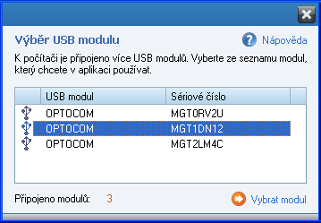

|
|
Informaèní panely jsou umístìny v levé èásti okna aplikace, a zobrazují podrobné informace o stavu pøipojených zaøízení.
1. Stav zařízení Jednotlivé stavy USB modulu a zařízení (nepřipojen, připojen, aktivní, chyba, průběh komunikace), se zobrazují pomocí grafického indikátoru. Podrobný popis významu indikátoru naleznete v kapitole Grafický indikátor.
Stavy USB modulu a zařízení jsou také uvedeny slovně:
nepřipojen - USB modul není připojen k počítači. inicializace - probíhá inicializace zařízení (regulátoru či BMS): načtení názvu a typu zařízení, načtení nastavení. aktivní - USB modul i zařízení jsou připojeny, a byly úspěšně inicializovány.
2. USB modul Zobrazení informací o připojeném USB modulu: název a sériové číslo modulu. Informace jsou zobrazeny, pokud je USB modul připojen k počítači.
3. Zařízení Zobrazení informací o připojeném zařízení (regulátoru či BMS): název a typ zařízení, verze firmware a zavaděče. Informace jsou zobrazeny, pokud je zařízení připojeno k USB modulu, a pokud je zařízení aktivní.
4. Výbìr modulu Pokud je k počítači připojeno více USB modulů, aktivuje se tlačítko Vybrat modul, pomocí kterého zobrazíte okno s výběrem USB modulů. V tomto okně je uveden seznam všech USB modulů, které jsou k počítači připojeny. Jednotlivé moduly jsou rozlišeny sériovým číslem.

V seznamu vyberte modul, který chcete v aplikaci používat, a volbu potvrďte pomocí tlačítka Vybrat modul. Okno s výběrem modulu se zavře, a aplikace začne používat zvolený USB modul. Pokud je k USB modulu připojeno zařízení (regulátor nebo BMS), dojde automaticky k jeho inicializaci: načtení názvu, typu a verzi firmware, a načtení nastavení. Pomocí funkce Výběr modulu tak můžete v aplikaci jednoduše přepínat mezi více zařízeními.
Pozn: pokud je k počítači připojeno více USB modulů, okno Výběr zařízení se také automaticky zobrazí vždy při spuštění aplikace.
|